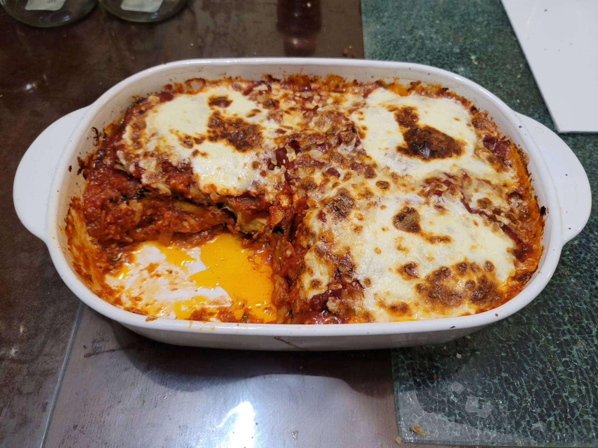

Parmigiana di Melanzane (Eggplant Parmesan)

Ingredients:
Parmigiana:
- 2 medium/large Eggplants, cut into 1/2 inch slices lengthwise
- Salt, as needed
- 1 cup Flour, or as needed
- Canola oil for frying
- 1 lb Mozzarella, shredded + optionally a few reserved slices for topping
- 1/2 lb Parmesan, shredded
Sauce:
- 25oz Tomato passata, or 28oz Crushed or Pureed tomatoes
- 3 tbsp Olive oil
- 1 small Onion, finely diced
- 3 cloves Garlic, finely minced
- Optional: 1/2 tsp Dried oregano
- 1/2 tsp Salt
- 1/4 tsp Pepper
- 1 tbsp Fresh basil, chopped, or to taste
Instructions:
- Slice the eggplants into 1/2 inch slices lengthwise. Rub with salt and place into a standing stack in a colander. Let the eggplants release their juices for 30 minutes, flipping the stack halfway.
- While waiting for the eggplants, prepare the sauce. In a pot over medium heat, heat the olive oil. Add in the onions and sauté until translucent, 5 minutes. Then add in the garlic and sauté for another minute.
- Add in the tomatoes, salt, pepper, and oregano and bring to a boil. Reduce to a simmer and let cook for 15 minutes, covered. Remove from heat and stir in the basil.
- After the eggplants have released their liquids, rinse them well under water. Then dry them completely with paper towels.
- Preheat the oven to 350 degrees Fahrenheit.
- Heat enough oil to reach halfway up an eggplant slice in a large pan over medium heat. In batches, dredge an eggplant slice in flour and immediately place it onto the pan to fry. Do not let the eggplant sit too long with the flour before frying as it will cause it to release more liquid. Fry until nicely browned on each side.
- To prepare the parmigiana, place a thin layer of the sauce at the bottom of a large baking dish. Then begin to layer it in the order of: eggplant, mozzarella and parmesan, and then more sauce. Repeat this layering while alternating between placing the eggplants horizontally or vertically for each layer, until the eggplants are finished. Then top it with the rest of the remaining sauce and then the rest of the remaining cheese along with a few whole slices of mozzarella.
- Place into the oven for 30 minutes, and then the broiler for 3 minutes. Then remove from the oven and let rest for at least 10 minutes before serving.